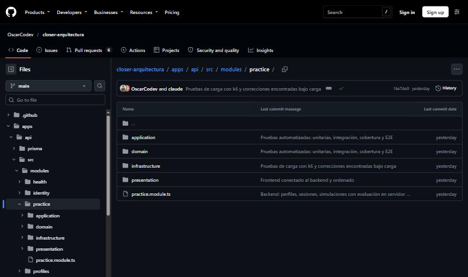
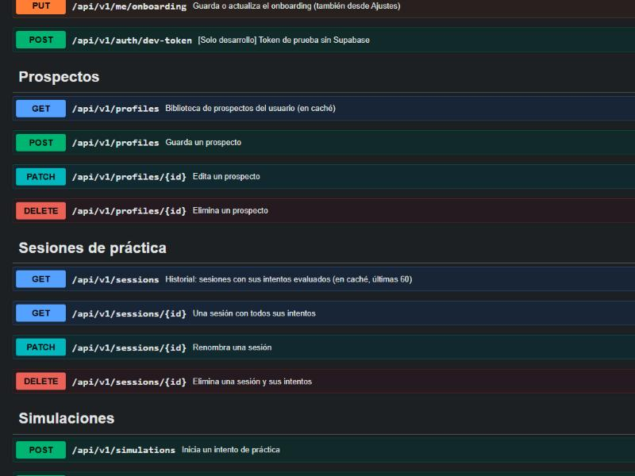
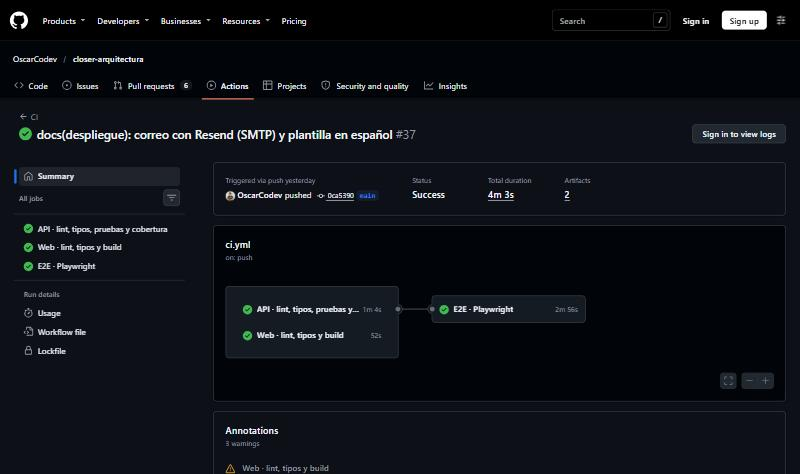
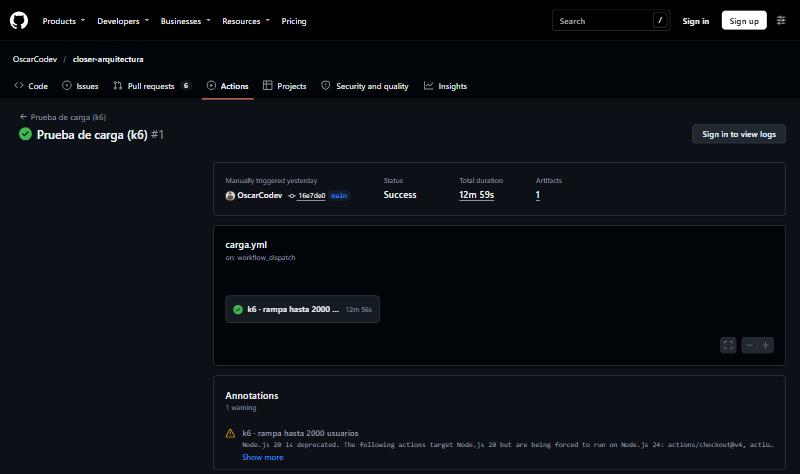
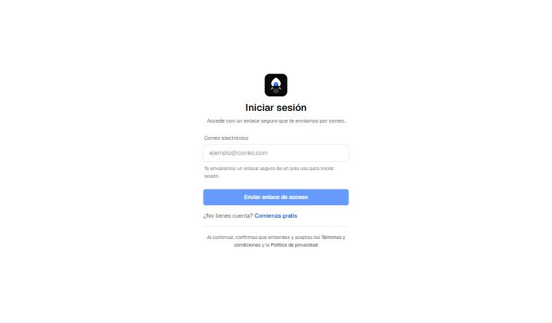
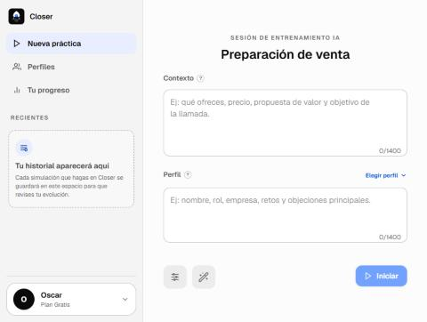
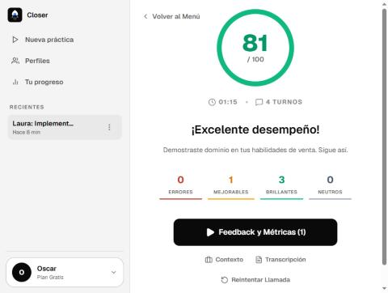

Describe qué vendes y a quién: la IA arma un prospecto con su personalidad y objeciones.
El navegador conversa con Gemini Live mediante un token efímero que emite el backend.
El servidor califica cada turno, calcula el puntaje y lo guarda en tu historial.
| Decisión | Lo documentado | Cómo quedó en el código | Estado |
|---|---|---|---|
| ADR-001 | Monolito modular | NestJS 11 con 5 módulos de negocio y un núcleo compartido | Cumple |
| ADR-002 | Clean Architecture | 4 capas por módulo; ESLint bloquea las dependencias prohibidas | Cumple |
| ADR-003 | Separar voz y gestión | REST /api/v1 para gestión; voz por WSS directo a Gemini Live | Cumple |
| ADR-004 | Puertos y adaptadores | ConversationAiPort, LiveVoicePort, CachePort… | Cumple |
| ADR-005 | PostgreSQL (Supabase) | Prisma con migraciones versionadas e índices por usuario | Cumple |
| ADR-006 | Evaluación idempotente | Estados IN_CALL → EVALUATING → COMPLETED/FAILED con compare-and-set | Cumple |
| ADR-007 | Secretos solo en el servidor | Token efímero de un solo uso; la API key nunca llega al navegador | Cumple |
| Nuevas | Surgieron al construir | ADR-008 caché con Redis · ADR-010 puntaje solo en servidor · ADR-011 RLS en Supabase | Agregadas |
Un solo despliegue del backend, dividido en módulos con fronteras claras.
Código: apps/api/src/modules
Las dependencias apuntan hacia adentro: el dominio no conoce ni Nest, ni Prisma, ni Gemini.

// eslint.config.mjs: el CI falla si se rompe la regla files: ['src/**/domain/**'], group: ['@nestjs/*', '@prisma/*', 'ioredis', '@google/genai'] // "El dominio no puede depender de frameworks ni proveedores."
Autenticación y onboarding
Biblioteca de prospectos
Iniciar práctica
Llamada y coach
Evaluación ⟵ ejemplo
Historial y reintentos
Soporte
Caché y rate limit
Cada una tiene: objetivo, historia, criterios de aceptación, reglas, contrato de API, diseño, tareas técnicas y trazabilidad a pruebas.
| CA-05.2 | Si el cliente envía un puntaje, se ignora: lo calcula el servidor. |
| CA-05.3 | Reenviar una evaluación ya completada devuelve el mismo resultado. |
| CA-05.4 | Dos evaluaciones simultáneas: solo una evalúa, la otra recibe 409. |
| CA-05.5 | Si la IA falla 3 veces: queda FAILED y se puede reintentar sin repetir la llamada. |
Cada criterio tiene su prueba en la matriz criterio → prueba.

{ "error": "Simulación no encontrada",
"code": "not_found" }
de las peticiones son lecturas: panel, historial y biblioteca.
Prueba con 2,000 usuarios · 376,696 peticiones
| Operación | Frecuencia | Tipo |
|---|---|---|
| Ver panel e historial | Al abrir la app | Lee |
| Revisar el onboarding | En cada navegación | Lee |
| Iniciar una práctica | Varias por sesión | Escribe |
| Evaluar una llamada | 1 por práctica | Escribe |
Como el índice de un libro: la BD va directo al dato sin leer toda la tabla.
Conclusión: casi todo es lectura, así que optimizamos para leer rápido: índices y caché en Redis (siguiente).
Dos peticiones evaluarían la misma llamada: la IA se pagaría dos veces.
Compare-and-set: la fila solo cambia si sigue en el estado esperado.
Con 10 conexiones por réplica se agotó el pool: errores “sin conexión libre”.
PgBouncer como recepcionista: hace la fila y reparte 40 conexiones reales.
Guardar una evaluación escribe 3 filas; con carga pasaba de 5 s y se cancelaba.
Transacción en lote: las 3 escrituras viajan juntas, todo o nada.
80 % de CPU en PostgreSQL en el pico: es el cuello de botella, no la API ni Redis.
579 ms p95 ✅ (umbral 1 s). Pero el p99 llega a 12.6 s: algunas peticiones esperan turno en el pool.
Siguiente paso: más recursos para PostgreSQL y réplicas de lectura para el historial (ADR-009).
¿Está en Redis? Responde al instante.
Si no, lee PostgreSQL y guarda con un TTL.
Cada escritura borra su clave al instante.
| Dato | TTL | Se invalida al… |
|---|---|---|
| Onboarding | 15 min | guardar el onboarding |
| Biblioteca de prospectos | 5 min | crear, editar o borrar un prospecto |
| Historial de sesiones | 2 min | evaluar, renombrar o borrar |
No se cachea el estado de la evaluación ni los tokens de voz: deben ser exactos. Si Redis cae, la app sigue funcionando contra PostgreSQL.
≈ 255,000 lecturas no tocaron PostgreSQL durante la prueba con 2,000 usuarios.
Medido en GET /api/v1/health/metrics de cada réplica: 85.6 %, 85.5 % y 85.4 %.
Controlador traduce HTTP · caso de uso coordina · scoring.ts calcula · adaptador habla con Gemini.
Un nuevo proveedor de IA = una nueva clase que implementa ConversationAiPort.
Adaptadores falsos y reales cumplen el mismo contrato: los casos de uso pasan con ambos.
Puertos pequeños: texto, voz, caché y límites por separado.
Los casos de uso reciben puertos inyectados; ESLint impide importar infraestructura.
// application/ports.ts export interface ConversationAiPort { evaluate(params): Promise<AiEvaluation> } // practice.module.ts: se elige por configuración useFactory: (config) => config.get('AI_PROVIDER') === 'gemini' ? new GeminiConversationAiAdapter(config) : new FakeConversationAiAdapter()
Prueba real: cuando Google retiró el modelo gemini-2.5-flash-lite, solo cambió una variable de configuración. Ni el dominio ni los casos de uso se tocaron.
Unitarias con dobles en memoria · integración con PostgreSQL y Redis reales · E2E con Playwright.
Barra = cobertura · línea negra = umbral mínimo del CI

Barra = p95 medido · línea negra = umbral (100 %)
5 de 5 umbrales cumplen Los únicos errores (0.057 %) fueron respuestas 429 del límite de uso: la protección funcionando.

¿Dónde está el límite? PostgreSQL al 80 % de CPU y el pool saturado en el pico. Redis solo al 13 %: la caché no es el cuello de botella.
Cada escenario del Sprint 1 tiene una prueba que lo respalda.
2,000 usuarios: p95 579 ms y 0 errores de gestión (k6).
Otro usuario recibe 404 en datos ajenos; el dueño sale del JWT (integración).
ESLint impide romper capas; IA sustituible por configuración (unitarias).
Fallos de la IA → FAILED con reintento, sin inventar feedback (unitarias).
Ya: si la IA cae, el historial sigue. Sprint 3: monitor de uptime 30 días (meta 99.5 %).
Ya: WSS directo a la IA. Sprint 3: medir latencia de respuesta con micrófono real.
Ya: flujo completo cubierto por E2E. Sprint 3: prueba con usuarios reales (cuestionario SUS).
cumplen hoy con evidencia automática; los otros 3 ya tienen base y se miden en el Sprint 3.



Flujo: iniciar sesión → onboarding → preparar → llamada de voz → evaluación → historial
Abrir Closer →